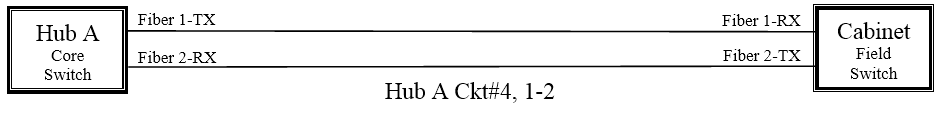
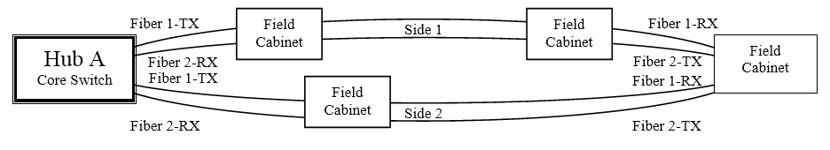

Standards
The FDOT Traffic Engineering and Operations Office keeps Florida safely on the go. For example, the ITSFM software enables accurate data and camera feeds to the statewide 511 Traffic Information System, used by millions of people each year. ITSFM helps keep FDOT’s real-time information accurate.
ITSFM Standards
All Users shall follow these ITSFM standards to ensure the system is populated with consistent information across the FDOT Districts and Regional Partners. Key elements of these standards include Database Management and Standardized Naming Conventions.
It is important the system be updated as changes and upgrades are made to the transportation management system. Database updates shall be performed on a timely basis to ensure accurate information about the installed facilities is available each time the system is accessed. It is equally important to follow the standard naming conventions to ensure query and reporting tools provide the expected results.
For more information, please contact Randy Pierce at 850-410-5600, or email Randy.Pierce@dot.state.fl.us
Data Management
The ITSFM is populated with a large amount of data so it is critical the data is collected and entered into the ITSFM utilizing predetermined standards to provide maximum functionality from the system. These standards allow users to view specific data (and filter out unwanted data) in graphical, tabular views and in the standard reports.
The ITSFM database includes feature tables based on these standards. Many of the tables use predefined code lists (text) in drop-down menus to ensure misspelled words such as an incorrect manufacturer, type and model for equipment will not adversely affect queries and searches.
The FDOT Districts and Regional Partners shall notify the Central Office ITS Section of the need to add new code list data to the system. Updating the code list is necessary to support new equipment attributes and provide for them to be placed into the system. All changes or additions to the system must be authorized and implemented by the Central Office.
Standard Naming Conventions
This section defines the methodology and terminologies that shall be used to populate feature information (both Linear and Point features) within the ITSFM system and to provide consistent and meaningful data across the Districts. Standardization will also provide for data integration (shared) into other database systems used by FDOT. The naming conventions are intended to provide users with intuitive information within the name itself and provide value to the user when navigating between the ITSFM system, maps, as-built plans and other system documents.
In order for the database to differentiate between individual ITS components, the components shall all be assigned unique identifying names or codes based on the following standardized naming conventions:
Site Identification Name
The ITSFM manages ITS, signal and communication system components by associating them to a specific location or site, typically the cabinet which houses the supporting electronics. For instance, Regional Transportation Management Centers (RTMCs), Communication Facilities (Hubs & Wireless Shelters), Equipment cabinets (ITS and Signal), Electrical sites (ELEC), and Utility Demarcation Sites (UDS) are equipment sites that require a unique Site Identification Name (SIN). This allows all system components installed at a site to be associated with the site SIN. The SIN shall be present on the new as-built plans and attribute inventory forms to create a common association between the two data documents. Linear facilities such as ducts and cables provide connectivity between equipment sites and do not utilize SINs because they are not tied to one specific location or coordinate point within the ITS network.
The SIN is partitioned into four designating sections, providing the reader with meaningful information about the site location including the Interstate or State Route numbers, milepost, proximity to the nearest travel lane or the median and a unique letter designator. The following is an example SIN that depicts a site located on State Route 821 at milepost station 56.1 near the northbound travel lane with a unique letter identifier “A.”
| Route | Mile Marker | Lane | Letter |
|---|---|---|---|
| SR821 | 56.1 | NB | A |
| Route: |
The 1st designator represents the Interstate or State Route number.
|
| Mile Marker: | The 2nd designator represents the mile marker station shown to the nearest tenth of a mile. The mile maker indicates the mile section posted in the field and may or may not be the same as the mile post shown on the FDOT straight line diagrams. This designator shall represent the mile marker shown in the field to assist with finding the location in the field. |
| Lane: | The 3rd designator represents the nearest travel lane. |
| Letter: | The 4th designator represents a unique identifier used to differentiate between other sites that are present in the same tenth (0.1) mile marker location and the same nearest travel lane. A second site would use the letter “B”, the third site the letter “C”, and so forth. |
If the roadway is not FDOT right-of-way such as on a city or county roadway, the SIN shall be the actual street address and roadway name where the site is located. For example, the SIN for a single site located at 100 Main Street near the eastbound travel lane would be:
| Adress | Roadway | Lane | Letter |
|---|---|---|---|
| 100 | MAIN ST | EB | A |
Infrastructure Names
Outside plant infrastructure such as equipment cabinets, access points, electrical sites, etc. shall be assigned a unique name. The naming convention for different types of facilities shall use the abbreviation for the facility type in conjunction with a SIN. Facility type abbreviations are as follows:
| CAB | Equipment Cabinet |
| ELEC | Electric Equipment Site |
| EPB | Electric Pullbox |
| FSV | Fiber Splice Vault |
| FPB | Fiber Pullbox |
| HUB | Communication Hub |
| POLE | Pole Support Structure |
| SLTR | Wireless Shelter |
| STR | Overhead Span or Cantilever Support Structure |
| UDS | Utility Demarcation Site |
Since the Site Identification Name provides a unique identifier for any type of field infrastructure, it shall be used in conjunction with the facility type abbreviations to name infrastructure facilities. The following is an example infrastructure name that depicts an electrical equipment site located on State Route 821 at milepost 56.1 near the northbound travel lane with a unique letter identifier “A”.
| Device Type | Route | Milepost | Lane | Letter |
|---|---|---|---|---|
| ELEC | SR821 | 56.1 | NB | A |
| Type: | The 1st designator represents the infrastructure type. |
| Route: | The 2nd designator represents the Interstate, U.S. Highway, State or County Route number or street name. Note that the address number and roadway designation (ST, LN, CT) are included in the Route designation for street addresses. |
| Milepost: | The 3rd designator represents the milepost location. |
| Lane: | The 4th designator represents the nearest travel lane. |
| Letter: | The 5th designator represents a unique identifier used to differentiate between other sites located within the same tenth (0.1) mile marker location and the same nearest travel lane. |
| Note: | Linear features such as ducts and cables do not need to be assigned a unique name. |
ITS Field Device and Signal Names
ITS field devices and signals are assigned unique names (i.e., CCTV #1, DMS #5, etc.) and should be used by the RTMC and shown on the as-built plans. These device names are typically comprised of two name components, the device type (CCTV, DMS, etc.) and the next consecutive number from the last number assigned to that type of device. Although this provides unique device names for a single FDOT District, the same device name might be used for a similar device by another FDOT District or Regional Partner, thereby making it difficult to query device information at the statewide level. To resolve this issue, all field devices must be associated in the ITSFM to their respective Equipment Cabinet which is assigned a unique infrastructure name.
Electrical Circuit Names
Electrical circuits distributed to ITS equipment sites or Electrical Load Center (ELC) from a Utility Demarcation Site (UDS) shall be assigned unique circuit identification name(s). The naming convention for an electrical circuit shall use the Utility Demarcation Site name in conjunction with a unique circuit identifier. If the electrical circuit is split into multiple distribution circuits at an ELC, the circuits shall be assigned a consecutive letter (i.e., A, B, C, etc,) to identify multiple circuits leaving the ELC. Circuits shall be numbered from left to right, top to bottom facing the electrical distribution panel.
The following is an example of a single circuit leaving a Utility Demarcation Site UDS-SR821-56.1-NB-A, Circuit “1” that can provide power service to either ITS equipment site(s) or an Electric Load Center.
| UDS Name | UDS Circuit |
|---|---|
| UDS-SR821-56.1-NB-A | 1 |
| UDS Name: | The 1st designator represents the Utility Demarcation Site name. |
| Circuit ID: | The 2nd designator represents the unique circuit identification number. |
The following is an example of the UDS circuit above being split into multiple circuits by an ELC.
| UDS Name | UDS / ELC Circuit |
|---|---|
| UDS-SR821-56.1-NB-A | 1A |
| UDS-SR821-56.1-NB-A | 1B |
| UDS Name: | The 1st designator represents the Utility Demarcation Site name. |
| Circuit ID: | The 2nd designator represents the unique ELC circuit number. |
Equipment Bay & Rack Names
Equipment racks shall be assigned unique bay and rack identification names. Equipment bays are defined as a row or multiple rows of equipment racks installed inside RTMC and remote HUB buildings. The naming convention for bays and racks shall use the SIN in conjunction with a unique bay and rack identifier. Bays shall be assigned a letter (i.e., A, B, C, etc,) to identify the bay and the racks shall be identified by assigning consecutive numbers to each rack in the bay. Racks shall be numbered from left to right facing the bay. The following is an example of an equipment rack located at HUB-SR821-56.1-NB-A, Bay “A”, Rack number 001.
| SIN | Bay | Rack |
|---|---|---|
| HUB-SR821-56.1-NB-A | A | 001 |
| SIN: | The 1st designator represents the Site Identification Name. |
| Bay: | The 2nd designator represents the unique bay letter. |
| Rack: | The 3rd designator represents the unique rack number. |
| HUB-SR821-56.1-NB-A
Equipment Room |
|||||
|
|||||
|
|||||
|
|||||
| *HUB-SR821-56.1-NB-A/C/001 |
Cable Complements
The ITSFM displays cable complements that summarize the physical and logical connectivity within a cable sheath. A complement is a grouping of logical circuits and logical fiber units displayed in sequential order within the cable sheath. Cable complements provide the user the ability to identify and track circuits through the cable network from the origination point to the termination point as well as provide cable sheath attributes and fiber path usage information including:
- Cable Sheath Data
- Actual cable length,
- Year installed,
- Strand quantity, and
- Conductor type.
- Cable sheath-count and Circuit Position
- Dark fiber paths,
- Optical circuit paths,
- Idle fibers (spliced through from other cables but not activated), and
- Dead fibers (not spliced to other cables).
The following Cable Complement is shown in Blue with the definition shown on the left and right of the complement. More information on the Naming Conventions used in this example is explained in the following subsection.
| Cable Footage in Feet | 4008 f – ‘2007 | Year Installed | |
| Manufacturer and Fiber Type | AFL-SM-072 | Number of Strands | Sheath Count |
| Dark Fiber Path from Hub A | Hub A, 1-4 (1-4) | Hub Port Numbers 1-4 | 1-4 |
| Optical Circuit Path #5 from Hub A | Hub A Ckt#5, 1-2 (5-6) | Fibers 1-2 from GBIC | 5-6 |
| Dead Fibers | Dead, 7-8 | Dead Sheath Fibers 7-8 | 7-8 |
| Optical Circuit Path #4 from Hub A | Hub A Ckt#4, 1-2 (9-10) | Fibers 1-2 from GBIC | 9-10 |
| Backbone Circuit #4 from RTMC | RTMC Trk#4, 1001-1002(11-12) | Fibers 1-2 from GBIC | 11-12 |
| Optical Circuit Path from #1Hub A | Hub A Ckt#1, 1-2 (13-14) | Fibers 1-2 from GBIC | 13-14 |
| Optical Circuit Path from #2Hub A | Hub A Ckt#2, 1-2 (15-16) | Fibers 1-2 from GBIC | 15-16 |
| Optical Circuit Path from #3Hub A | Hub A Ckt#3, 1-2 (17-18) | Fibers 1-2 from GBIC | 17-18 |
| Dark Fiber Path from Hub A | Hub A, 19-44 (19-44) | Hub Port Numbers 19-44 | 19-44 |
| ITS WAN Backbone Circuit | ITS WAN, 1001-1004(45-48) | Fibers 1-4 | 45-48 |
| Dark Fiber Path from Hub A | Hub A, 49-54 (49-54) | Hub Port Numbers 49-54 | 49-54 |
| Backbone Circuit #5 from A | RTMC Trk#5, 1001-1002(55-56) | Fibers 1-2 from GBIC | 55-56 |
| Dark Fiber Path from Hub A | Hub A, 57-72(57-72) | Hub Port Numbers 57-72 | 57-72 |
Dark Fiber Path Names
The term “Dark Fiber Path” is defined as a fiber path terminated on a patch panel at the fiber path’s origination point but not connected or activated to any optical communication equipment. Dark Fiber Paths typically originate at major control sites such as the RTMC, Hub or other control centers. Dark Fiber Paths shall be assigned unique and meaningful names that allow user to quickly identify and track the Fiber Path in the ITSFM as it traverses the cable network.
The naming convention for a Dark Fiber Path shall be based on a combination of the name for the Point-of-Origination, shown as the prefix, in conjunction with the fiber port termination position on the patch panel (i.e., fiber path 1 = port 1, fiber path 2 = port 2, etc.). The Dark Fiber Path name shall not exceed twenty-five (25) characters. The following is an example name for a Dark Fiber Path leaving the RTMC on patch panel Port #84:
| Path Name | Port # |
|---|---|
| RTMC, | 84 |
| Path Name: | The 1st designator represents the fiber path name at the Point-of-Origination. |
| Port #: | The 2nd designator represents the patch panel port number termination. |
| Note: | Patch panel port numbers shall be based on the total number of patch panel ports at the equipment site. Empty port modules shall be counted in the total patch panel port count. For example, If two 72-fiber patch panels are installed at the RTMC, the port numbers for the 1st panel installed will be ports 1 through 72 and the 2nd panel will be ports 73 through 144. Each time a patch panel is installed, the 1st port will be assigned the next available port number. Patch panel port numbers shall be labeled on each patch panel. |
Optical Circuit Names
The term “Optical Circuit” is defined as a logical fiber circuit connected to or activated to optical communication equipment creating a lit optical circuit. Optical circuits can be derived from various types of communication equipment installed at the RTMC, Communication Hub or other control centers. Optical Circuits shall be assigned unique and meaningful names to allow users to quickly identify and track the Optical Circuit in the ITSFM as it traverses the cable network.
The naming convention may vary based on the circuit’s type (i.e. backbone or distribution) and the circuit’s physical topology. The name shall include a prefix that includes an abbreviation representing the Point-of-Origination and Circuit Identifier or other meaningful description in conjunction with logical fiber units. Another option is to use the abbreviations for the circuit’s point-of-origin, combined with its destination, to name the circuit.
The circuit identifier shall include text that differentiates the circuit from other circuits. For example:
- The abbreviation “Trk” can be used to indicate backbone or trunk circuits between the RTMC and Communication Hubs
- The abbreviation “Ckt” can be used to indicate a distribution circuit derived from the backbone.
- The abbreviation RTMC-FHP can be used to indicate a circuit between the RTMC and the Florida Highway Patrol.
The optical circuit name will include the optical fiber units or count for each circuit. Optical circuits are typically comprised of two fibers, one for transmit and the other for receive, therefore two fiber numbers (1-2) are used to designate a two fiber circuit.
The following circuit name represents the first two fiber backbone circuit originating at the Regional Transportation Management Center.
| Circuit Name / # | Fiber # |
|---|---|
| RTMC Trk#1, | 1 |
| RTMC Trk#2, | 2 |
| Circuit Name / #: | The 1st designator represents the Point-of-Origination name in conjunction with the unique circuit identifier and circuit number. Circuits with the same name shall be assigned a unique number, typically the next available number as the new circuit is activated. |
| Fiber #: | The 2nd designator represents the fiber number. |
| Note: | Fiber units are not intended to indicate signal direction such as transmit or receive.
GigaBit Interface Converters (GBIC) are transceivers installed in a single port or slot on communication equipment and are the interface between this equipment and the patch panel. GBIC have two fiber ports, one for transmit and one for receive that together form a single Optical Circuit. |
Example Circuit Naming Conventions
The following are examples of naming conventions based on different circuit type and topologies.
Point-to-Point Topology
The following represents a Point-to-Point backbone circuit between the RTMC and Hub A. This circuit is the fifth backbone or trunk (Trk#5) two-fiber (1-2) circuit that originates at the (RTMC)
The following represents a Point-to-Point distribution circuit between Hub A and the field cabinet. This circuit is the fourth (Ckt#4) two-fiber (1-2) distribution circuit that originates at (Hub A).
Ring Topology
Collapsed or Protected Ring circuits use two uni-directional transmission links to provide physical protection against outages caused by cable cuts when cables are deployed along separate or diverse paths between the equipment sites. The circuit name is similar to a point-to-point circuit name but these circuits include the term “Loop” in the prefix to represent that the circuit is configured in a Ring Topology. The prefix also includes a unique letter designation that separates the ring into two sides. For example, the letter “A” can represent one side of the ring and the Letter “B” can represent the other side. The separation typically happens at a mid-point termination site. Another naming option would be the letter “N” representing the north side of the ring and “S” for the south side of the ring, if appropriate.
The following diagram represents a ring backbone circuit between the RTMC and the Florida Highway Patrol (FHP) facility. This circuit is the third two-fiber (1-2) ring truck circuit (Trk#3) that originates at the RTMC and extends through the FHP facility then back to the RTMC.
| Option 1 – Side 1 |
|---|
| RTMC Trk#3 Loop (A), 1-2 |
| Option 2 – Side 1 |
|---|
| RTMC-FHP Loop (A), 1-2 |
| Option 1 – Side 2 |
|---|
| RTMC Trk#3 Loop (B), 1-2 |
| Option 2 – Side 2 |
|---|
| RTMC-FHP Loop (B), 1-2 |
The following represents a ring distribution circuit between Hub A and numerous field cabinets. This circuit is the ninth two-fiber (1-2) ring distribution circuit (Ckt#9) that originates at Hub A and extends through multiple cabinets, then back to Hub A.

| Side 2 |
|---|
| Hub A Ckt#9 Loop (B), 1-2 |
Multiple Path Distribution Circuits
Multiple Path Distribution Circuits provide protection against outages caused by cable cuts because the distribution circuit is connected to multiple Core Ethernet switches allowing the signal to travel to either Ethernet switch in the event of a cable cut.
The circuit identifier shall include the abbreviation of both core switch sites (point-of-origin combined and destination). The order in which the origin and destination are presented is not important. The prefix shall also include a unique circuit identifier number to distinguish it from other circuits with the same origin – destination.
| HubA-HubB Ckt#1, 1-2 |
Dead Fiber Names
Dead fibers are defined as Optical Fibers that are not spliced to fibers in an adjacent cable sheath or terminated to a patch panel. Dead fibers include, among others, fibers that have been cut dead ahead at a fiber drop cable location (i.e. end point of an optical circuit) and are not spliced to other fibers beyond this location. Dead fibers are automatically identified in the cable complement by the ITSFM by the prefix “Dead” followed by the fiber(s) sheath count position within the cable.
| Example: Dead, 5-12 – This designation indicates fibers 5-12 in the cable sheath are dead. |
Abbreviations
The following list of abbreviations shall be used with the ITSFM:
| APL | Approved Products List |
| ATIS | Advanced Traveler Information System |
| ATMS | Advanced Traffic Management System |
| ASPH | Asphalt |
| AVI | Automatic Vehicle Identification |
| BGN | Begin |
| BOC | Back of Curb |
| BRDG | Bridge |
| BSP | Black Steel Pipe |
| CAB | Cabinet |
| CCTV | Closed Circuit Television |
| C/L | Centerline |
| CMP | Corrugated Metal Pipe |
| CMS | Changeable Message Sign |
| CNG | Change |
| CNTY | County |
| CONC | Concrete |
| CRN | Corner |
| CRK | Creek |
| CULV | Culvert |
| DEPT | Department |
| DIR | Directional |
| DMS | Dynamic Message Sign |
| E | East |
| EB | East Bound |
| EDS | Electronic Display Sign |
| ELC | Electrical Load Center |
| ELEC | Electric |
| ENC | Encased |
| ENCD | Encode |
| EOG | Edge of Gravel |
| EOP | Edge of Pavement |
| EOR | Edge of Road |
| EOTL | Edge of Travel Lane |
| EPB | Electric Pullbox |
| EQUIP | Equipment |
| ESFS | Electronic Speed Feedback Sign |
| EXST | Existing |
| FH | Fire Hydrant |
| FNC | Fence |
| FOC | Fiber Optic Cable |
| FPB | Fiber Pullbox |
| FRE | Reinforced Thermosetting Resin |
| FSV | Fiber Splice Vault |
| GR | Guard Rail |
| GRS | Galvanized Rigid Pipe |
| GRVL | Gravel |
| GSP | Galvanized Steel Pipe |
| HAR | Highway Advisory Radio Transmitter Site |
| HARS | Highway Advisory Radio Sign |
| HDPE | High Density Polyethylene |
| HUB | Communication Hub |
| HWL | Headwall |
| HWY | Highway |
| INT | Intersection |
| ITS | Intelligent Transportation Systems |
| LN | Lane |
| LT | Left |
| LGTH | Length |
| LGT | Light |
| MAX | Maximum |
| MH | Manhole |
| MKR | Marker |
| MP | Mile Post |
| MPNIF | Mile Post Not In Field |
| MIN | Minimum |
| N | North |
| NB | North Bound |
| NTCIP | National Transportation Communications for ITS Protocol |
| # | Number |
| OH | Overhead |
| OHSIG | Overhead Signal |
| PED | Pedestal |
| PET | Petroleum |
| PI | Point of Intersection |
| P/L | Property Line |
| PP | Power Pole |
| PTU | Pan & Tilt Unit |
| PTZ | Pan, Tilt & Zoom |
| PVC | Polyvinyl Chloride |
| PWR | Power |
| RAD | Radius |
| RCP | Reinforced Concrete Pipe |
| RD | Road |
| RDS | Radar Detection System |
| REQD | Required |
| RGS | Rigid Galvanized Steel |
| R/L | Running Line |
| RM | Ramp Meter |
| R/R | Railroad |
| RT | Right |
| RTMC | Regional Transportation Management Center |
| R/W | Right of Way |
| RWIS | Road & Weather Information |
| S | South |
| SB | South Bound |
| SBCS | Safety Barrier Cable System |
| SCS | Speed Check Sign |
| SIG | Signal |
| SLTR | Wireless Shelter |
| STA | Station |
| STR | Overhead Span or Cantilever Support Structure |
| STS | Storm Sewer |
| ST | Street |
| SWR | Sewer |
| TEL | Telephone |
| TCC | Traffic Control Center |
| TTMS | Telemetered Traffic Monitoring Site |
| TYP | Typical |
| UDS | Utility Demarcation Site (power or comm) |
| VDS | Vehicle Detection System |
| W | West |
| West | West Bound |
| W/ | With |
| WAT | Water |